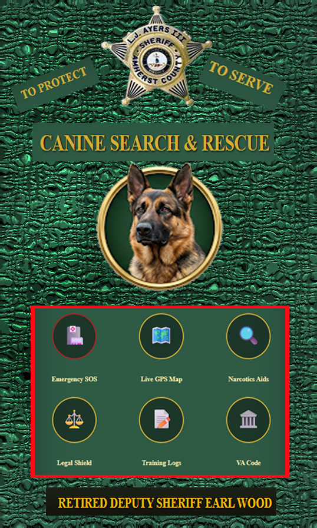

COMMAND CPR METRONOME
Lay dog on right side. Place hands over ribs where elbow touches chest. Compress 1/3 to 1/2 the width of the chest.
CRITICAL CARE PROTOCOLS
NARCAN: 4mg nasal spray immediately for opioid exposure. Symptoms: slow breathing, pinpoint pupils. Repeat every 3 mins if no change.
BLOAT (GDV): Emergency surgery required. Watch for unproductive vomiting and a hard, distended belly. Do not give water. Transport ASAP.
HEATSTROKE: Temp over 104°F. Use running cool water (paws/groin). NEVER use ice water—it shuts down surface vessels and fries internal organs.
GSW/TRAUMA: Direct pressure only. For limbs, apply tourniquet high and tight. Keep dog warm and quiet to prevent shock.
FEDERAL CASE LAW
Rodriguez v. US: The 4th Amendment prohibits extending a traffic stop for a K9 sniff without separate Reasonable Suspicion. The clock stops when the "mission" of the ticket is done.
Florida v. Harris: Reliability is based on a dog's certification and training records. A final alert from a certified dog establishes Probable Cause for a search.
US v. Place: A sniff of luggage/cars in a public area is not a "search" because it only detects illegal items. No warrant required for the sniff itself.
VIRGINIA STANDARDS
Jardines Rule: You cannot take a dog onto a front porch (curtilage) to sniff a door without a warrant. Evidence found via a porch-sniff is inadmissible in VA.
Automobile Exception: In VA, a K9 alert gives you PC to search the entire vehicle and all containers within. Clearly articulate the "alert" vs. "interest" in your report.
NARCOTIC IDENTIFICATION
FENTANYL: Assume all blue "M30" pills and white powders contain Fentanyl. 2mg is a lethal human dose. Use Nitrile gloves; never use air blowers near powders.
METHAMPHETAMINE: Clear/cloudy crystals ("Ice"). Look for glass pipes and butane torches. In VA, 10g triggers mandatory minimums.
COCAINE/CRACK: Off-white "rocks" or white powder. 5g of base (crack) triggers major penalties. Look for baking soda/scales as PWID evidence.
HEROIN: VA "Grey Death" is common. Highly lethal. Look for wax stamps and burnt spoons.